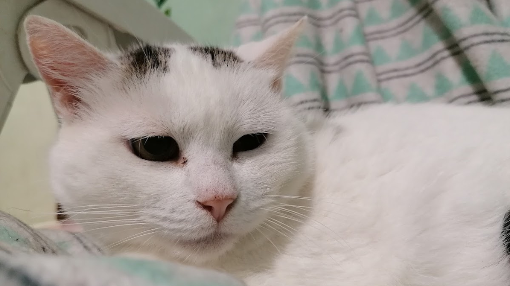
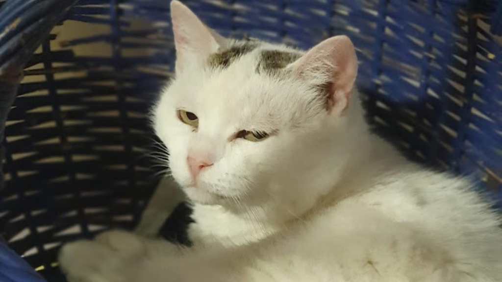
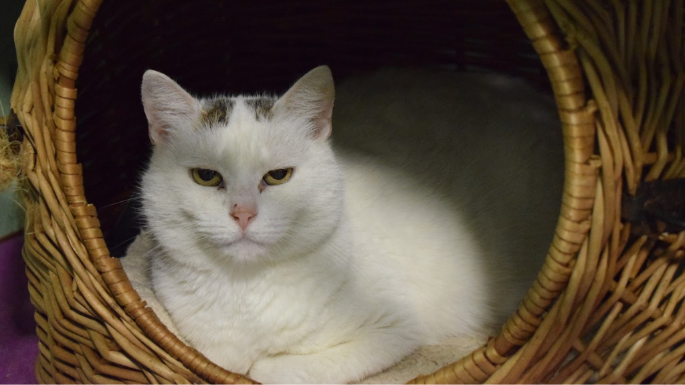

Vârstă: 11 ani
Sex: Femela




Vârstă: 11 ani
Sex: Femela
Alba este o pisică a străzii pe care am cunoscut-o în 2016, după ce puii ei au fost găsiți în pericol, într-o stație de autobuz. În timp ce micuțele au fost salvate, Alba a rămas sub un pod, unde a supraviețuit ani la rând, hrănită de oameni cu suflet mare, dar ferită de apropierea lor. A fost mereu precaută, retrasă și greu de ajutat, așa cum sunt multe pisici care au trăit prea mult timp pe străzi.
Anii au trecut, iar viața grea și-a pus amprenta asupra ei. Încet, Alba a început să aibă mai multă încredere, să răspundă când era strigată și să accepte mângâieri.
După aproape 6 ani petrecuți sub pod, am reușit în cele din urmă să o aducem în adăpost, unde adaptarea a fost grea, dar nu imposibilă. Cu timpul, a învățat să se simtă în siguranță, să doarmă la cald și să se bucure de mâncare și apă fără teamă.